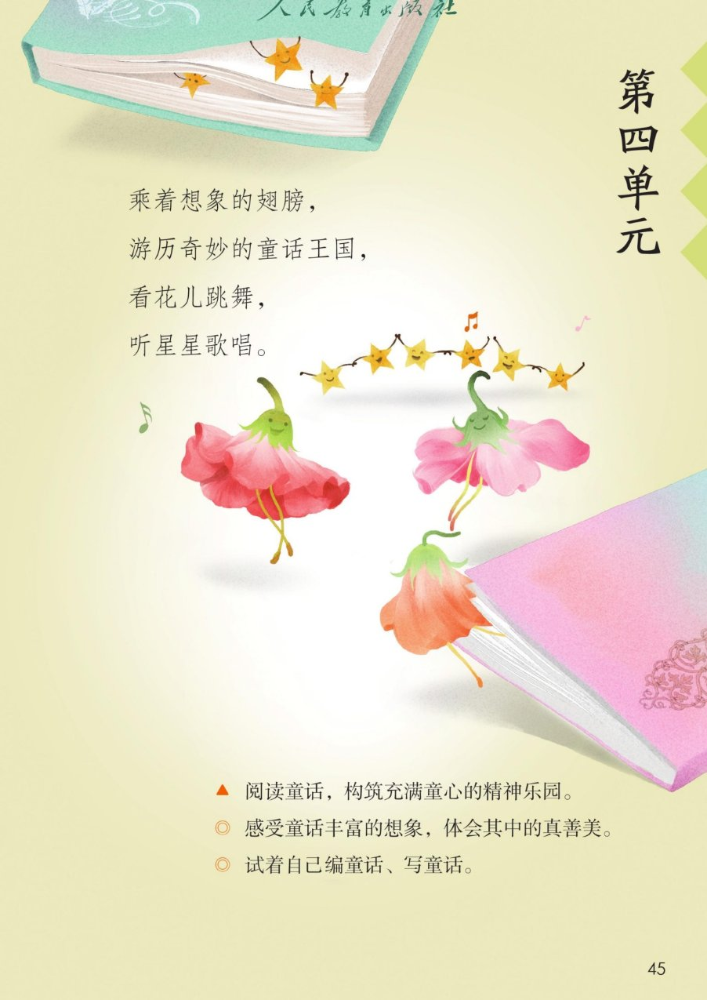
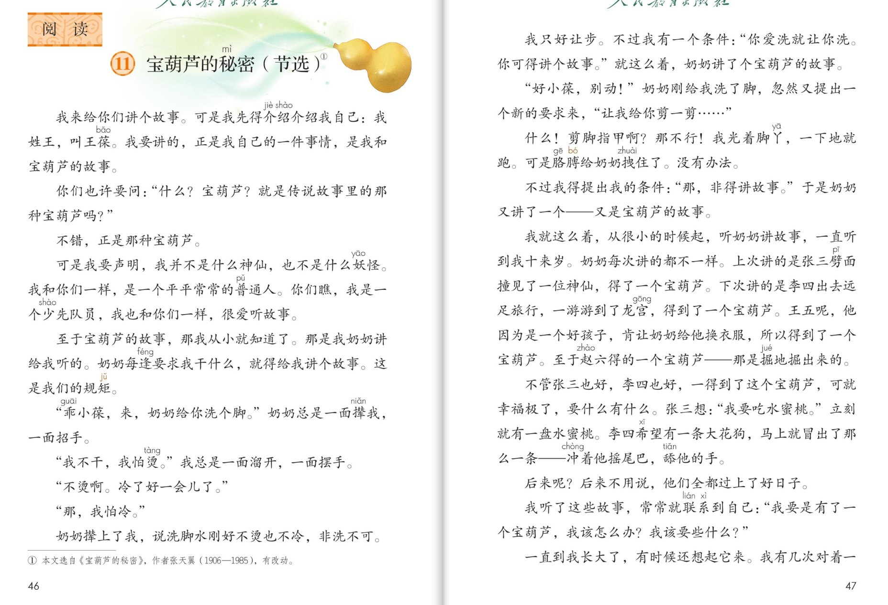
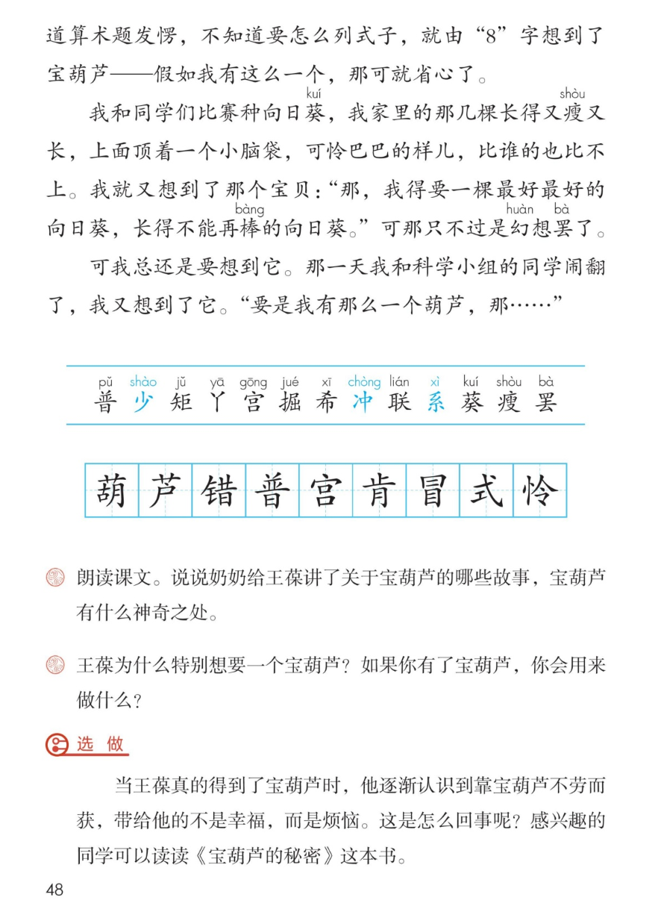

×
🔊 手机听不到声音怎么办？
① 先把手机
媒体音量调大 ，确认没开静音、没连蓝牙耳机；在微信里打开的，点右上角「⋯ → 用浏览器打开」。
② 还是没声音？到应用商店免费下载
Microsoft Edge 浏览器 （它自带朗读发声），用它打开本页面就能出声。
③ 换了 Edge 仍然没声音，说明这部手机的
硬件/系统不支持 网页朗读（多为老旧机型）；近几年买的新手机一般都能正常播放。
→ 打开声音自检
🍐 第 11 课《宝葫芦的秘密（节选）》· 有声图文带读
统编版语文 · 第四单元·阅读 · 课本 P45~48 · 作者：张天翼（1906—1985） · 素养升级版（对标 2022 课标第二学段）
课文 21 个自然段
素养目标 4
会认字 13
会写字 9
听写词 12
想象探究 6 卡
深入理解 8 题
本课本领 感受童话的想象
🎧 这样学（可随时点任意一句、一个字、一个词单独听）： ① 听读课文 ——一句一句读，读到哪一句哪一句发光；边读边想象童话的画面。② 学字词 ——13 个会认字、9 个会写字，点一个读一个。③ 词语·听写 ——听写 12 个课文词（读两遍→你写→报答案→听示范句），再听 4 组近义词辨析。④ 深入理解 ——8 道题（认知 / 理解 / 运用 / 拓展），先想后看。⑤ 分角色朗读 ——旁白、王葆、奶奶、故事员，读出祖孙俩的亲热劲儿。🌟 本单元任务：感受童话丰富的想象，体会其中的真善美——再试着自己编童话、写童话！
📌 本单元语文要素 ——单元导语（P45 照录）：乘着想象的翅膀，游历奇妙的童话王国，看花儿跳舞，听星星歌唱 ；要点：感受童话丰富的想象，体会其中的真善美 ；试着自己编童话、写童话 。
🀄 文化自信
🀄 文化自信
走进中国童话经典《宝葫芦的秘密》，感受张天翼笔下祖孙故事的亲切和中国童话的趣味。
🗣 语言运用
🗣 语言运用
认识 13 个生字，会写 9 个字；积累“规矩、条件、幸福、幻想”等词语和“一面……一面……”的句式。
💡 思维能力
💡 思维能力
感受童话丰富的想象，说清宝葫芦的神奇之处，并思考“不劳而获”背后的道理。
🎨 审美创造
🎨 审美创造
边读边想象童话的画面，试着编一编“谁得到了宝葫芦”，体验编童话的乐趣。
点段前的 ①②③ 听整段
🔁 跟读模式：关
👁 隐藏注音（自测用）
字卡上的拼音标的是本课要认的字，读音来自课本生字表
🎤 朗读要求（老师标准） 不添字、不漏字 ；不出声、不指读 ，一边读一边想象画面 ；天真和着急 ，奶奶的话读得慈祥、亲切 ；神奇、向往 。
🤫 默读小提示（边默读边想象） 听读 ——点句子听老师读；第二步 默读 ——不出声、不指读，一边读一边想象画面 ：宝葫芦什么样、得到宝葫芦的人过上了怎样的日子；第三步 朗读 ——把你觉得最神奇的地方 读出来。
①
我来给你们讲个故事。
可是我先得介绍介绍我自己：我姓王，叫王葆。
我要讲的，正是我自己的一件事情，是我和宝葫芦的故事。
📌 这一段讲：自我介绍：我姓王，叫王葆，要讲我和宝葫芦的故事。
②
你们也许要问：“什么？宝葫芦？就是传说故事里的那种宝葫芦吗？”
📌 这一段讲：你们也许要问：就是传说故事里的那种宝葫芦吗。
③
不错，正是那种宝葫芦。
📌 这一段讲：不错，正是那种宝葫芦。
④
可是我要声明，我并不是什么神仙，也不是什么妖怪。
我和你们一样，是一个平平常常的普通人。
你们瞧，我是一个少先队员，我也和你们一样，很爱听故事。
📌 这一段讲：声明：我不是神仙，是个平平常常的少先队员，很爱听故事。
⑤
至于宝葫芦的故事，那我从小就知道的。
那是我奶奶讲给我听的。
奶奶每次要求我干什么，就得给我讲个故事。
这是我们的规矩。
📌 这一段讲：宝葫芦的故事是奶奶讲的——干什么都得讲个故事，这是我们的规矩。
⑥
“乖小葆，来，奶奶给你洗个脚。”奶奶总是一面撵我，一面招手。
📌 这一段讲：奶奶哄我洗脚：乖小葆，来，奶奶给你洗个脚。
⑦
“我不干，我怕烫。”我总是一面溜开，一面摆手。
📌 这一段讲：我怕烫，一面溜开一面摆手。
⑧
“不烫啊。冷了好一会儿了。”
📌 这一段讲：奶奶说：不烫啊，冷了好一会儿了。
⑨
“那，我怕冷。”
📌 这一段讲：我说：那，我怕冷。
⑩
奶奶撵上了我，说洗脚水刚好不烫也不冷，非洗不可。
📌 这一段讲：奶奶撵上了我：洗脚水刚好不烫也不冷，非洗不可。
⑪
我只好让步。
不过我有一个条件：“你爱洗就让你洗。你可得讲个故事。”
就这么着，奶奶讲了个宝葫芦的故事。
📌 这一段讲：我让步的条件是：洗脚可以，你可得讲个故事。
⑫
“好小葆，别动！”奶奶刚给我洗了脚，忽然又提出一个新的要求来，“让我给你剪一剪……”
📌 这一段讲：奶奶又提出新要求：让我给你剪一剪……
⑬
什么！剪脚指甲啊？那不行！
我光着脚丫，一下地就跑。
可是胳膊给奶奶拽住了。没有办法。
📌 这一段讲：剪脚指甲可不行——我跑了，胳膊却被奶奶拽住了。
⑭
不过我得提出我的条件：“那，非得讲故事。”于是奶奶又讲了一个——又是宝葫芦的故事。
📌 这一段讲：我的条件：非得讲故事——于是奶奶又讲了一个宝葫芦的故事。
⑮
我就这么着，从很小的时候起，听奶奶讲故事，一直听到我十来岁。
奶奶每次讲的不一样。
上次讲的是张三劈面撞见了一位神仙，得到了一个宝葫芦。
下次讲的是李四出去远足旅行，一游游到了龙宫，得到了一个宝葫芦。
王五呢，他因为是一个好孩子，肯让奶奶给他换衣服，所以得到了一个宝葫芦。
至于赵六得的一个宝葫芦——那是掘地掘出来的。
📌 这一段讲：奶奶讲的故事都不一样：张三、李四、王五、赵六，各得到一个宝葫芦。
⑯
不管张三也好，李四也好，一得到了这个宝葫芦，可就幸福极了，要什么有什么。
张三想：“我要吃水蜜桃。”立刻就有一盘水蜜桃。
李四希望有一条大花狗，马上就冒出了那么一条——冲着他摇尾巴，舔他的手。
📌 这一段讲：要什么有什么：张三有了水蜜桃，李四有了大花狗。
⑰
后来呢？后来不用说，他们全都过上了好日子。
📌 这一段讲：后来他们全都过上了好日子。
⑱
我听了这些故事，常常就联系到自己：
“我要是有了一个宝葫芦，我该怎么办？我该要些什么？”
📌 这一段讲：我听了常常联系到自己：我该要些什么呢。
⑲
一直到我长大了，有时候还想起它来。
我有几次对着一道算术题发愣，不知道要怎么列式子，就由“8”字想到了宝葫芦——假如我有这么一个，那可就省心了。
📌 这一段讲：长大了还想起它：做算术题发愣，就想到宝葫芦——那可就省心了。
⑳
我和同学们比赛种向日葵，我家里的那几棵长得又瘦又长，上面顶着一个小脑袋，可怜巴巴的样儿，比谁的也比不上。
我就又想到了那个宝贝：“那，我得要一棵最好最好的向日葵，长得不能再棒的向日葵。”
可那只不过是幻想罢了。
📌 这一段讲：种向日葵比不过人家——我想要一棵不能再棒的向日葵，可那只不过是幻想罢了。
㉑
可我总还是要想到它。那一天我和科学小组的同学闹翻了，我又想到了它。
“要是我有那么一个葫芦，那……”
📌 这一段讲：和同学闹翻了，我又想到了它——要是我有那么一个葫芦，那……
🤔 想一想（点我可跳过）
双页宽图自动占整行

第 45 页 · 单元导语

第 46~47 页 · 课文

第 48 页 · 认字 · 写字 · 课后练习
📖 人教版《语文》三年级上册 · 课本第 45~48 页 · 图片仅供个人学习，版权归人民教育出版社所有
📚 注释① 本文选自《宝葫芦的秘密》 ，作者张天翼（1906—1985） ，有改动。
点一个字，听读音、词语和在课文里的句子；少、冲、系是多音字
结构、部首、笔画与书写提示为通用规范，供参考，以教材和老师的指导为准
葫hú
葫芦
上下 · 艹 · 12画
草字头写扁，下面胡字左古右月，月字撇变竖。
芦lú
葫芦
上下 · 艹 · 7画
草字头盖住下面的户字，户字点画要正。
错cuò
不错
左右 · 钅 · 13画
金字旁写窄，右边昔字横画均匀，日字写扁。
普pǔ
普通
上下 · 日 · 12画
上面并字两点对称，长横写平，下面日字写扁。
宫gōng
龙宫
上下 · 宀 · 9画
宝盖头写宽，下面吕字两口上小下大，竖画对正。
肯kěn
肯让
上下 · 止 · 8画
上面止字写扁，中竖对正，下面月字撇变竖。
冒mào
冒出
上下 · 曰 · 9画
上面扁曰两横不碰边框，下面目字写窄长，别写成日字。
式shì
式子
半包围 · 工 · 6画
工字上横短下横长，斜钩要写得有力，注意不要多加一撇。
怜lián
可怜巴巴
左右 · 忄 · 8画
竖心旁左点低右点高，右边令字撇捺舒展，点不能丢。
点一行，听读这一组词语
普 普通 普普通通 普查
宝 宝葫芦 宝贝 宝石
幸 幸福 幸运 庆幸
葵 向日葵 葵花 葵花籽
读两遍 → 你在纸上写 → 报答案 → 听示范句
准备听写 · 共 12 个词
○ ○ ○
点下面的「开始听写」，听到一个词就写一个词。
▶ 开始听写
🔁 再读一遍
👁 看答案
点词听读，点句子听示范句，再自己说一句
1 介绍 课文词
示范句：我先得介绍介绍我自己。
✏️ 我也能说：谁介绍谁。
2 传说 课文词
示范句：就是传说故事里的那种宝葫芦吗。
✏️ 我也能说：什么样的宝葫芦。
3 妖怪 课文词
示范句：我并不是什么神仙，也不是什么妖怪。
✏️ 我也能说：我不是什么。
4 规矩 课文词
示范句：奶奶要求我干什么，就得讲个故事，这是我们的规矩。
✏️ 我也能说：什么是规矩。
5 条件 课文词
示范句：不过我有一个条件。
✏️ 我也能说：谁有一个什么。
6 拽住 课文词
示范句：胳膊给奶奶拽住了。
✏️ 我也能说：谁被拽住了。
7 远足 课文词
示范句：李四出去远足旅行。
✏️ 我也能说：谁去远足。
8 掘地 课文词
示范句：那是掘地掘出来的。
✏️ 我也能说：什么掘出来的。
9 幸福 课文词
示范句：一得到了这个宝葫芦，可就幸福极了。
✏️ 我也能说：谁幸福极了。
10 向日葵 课文词
示范句：我和同学们比赛种向日葵。
✏️ 我也能说：谁种向日葵。
11 幻想 课文词
示范句：可那只不过是幻想罢了。
✏️ 我也能说：什么是幻想罢了。
12 省心 课文词
示范句：假如我有这么一个，那可就省心了。
✏️ 我也能说：什么省心。
相同点 / 不一样在哪 / 各造一句
幸福 — 快乐
相同：都表示心里舒服、满足。
不一样：幸福 多指生活美满、长久的心满意足；快乐 偏重一时的开心。
幸福：得到了宝葫芦，可就幸福极了。
要求 — 请求
相同：都表示提出愿望。
不一样：要求 偏重提出事项希望做到；请求 偏重恳切地希望别人答应。
要求：奶奶每次要求我干什么，就得讲个故事。
幻想 — 想象
相同：都表示想出不在眼前的事物。
不一样：幻想 偏重不切实际、难以实现；想象 可虚可实，是写作的好帮手。
幻想：那只不过是幻想罢了。
省心 — 放心
相同：都表示不用操心。
不一样：省心 偏重少费心思；放心 偏重心里没有牵挂。
省心：假如我有这么一个，那可就省心了。
一面……一面…… 一面撵我 一面招手 一面溜开 一面摆手
称呼与叮嘱 乖小葆 好小葆 别动 非洗不可
……极了 幸福极了 好极了 高兴极了
省略号的留白 让我给你剪一剪…… 要是我有那么一个葫芦，那……
点一张卡，听这条想象线索
单元导语说：乘着想象的翅膀 ，游历奇妙的童话王国。这篇童话的想象藏在六张卡片里——找一找，哪些地方最神奇。
🎩 第一人称的开场
我姓王，叫王葆——童话里的“我”像真有其人，故事一开口就把你拉进去。
🍵 听故事的规矩
洗脚要讲故事，剪指甲也要讲故事——一面撵我一面招手的奶奶，亲切得像自己的奶奶。
🍑 四个人的宝葫芦
张三撞见神仙、李四游到龙宫、王五好孩子、赵六掘地掘出来——想象五花八门，各有各的来历。
✨ 要什么有什么
想水蜜桃立刻就有一盘，想要大花狗马上冒出来——这就是童话的神奇想象。
➰ 从烦恼里长出的想象
由“8”字想到宝葫芦、向日葵比不过人就想要一棵不能再棒的——想象从生活里的烦恼长出来。
⚖️ 真善美的种子
课文的“选做”悄悄提醒：靠宝葫芦不劳而获，带给王葆的不是幸福，而是烦恼——童话里藏着道理。
标「答案不唯一」的题，说得有道理都对
认知 单元导语给这个单元定了什么任务？看解析
🤔 想一想
解析：
乘着想象的翅膀，游历奇妙的童话王国，看花儿跳舞，听星星歌唱；感受童话丰富的想象，体会其中的真善美；试着自己编童话、写童话。（P45 照录）
🌈 答案不唯一，说得有道理都对
认知 课文讲了一件什么事？看解析
🤔 想一想
解析：
王葆从小爱听奶奶讲宝葫芦的故事——张三、李四、王五、赵六得到宝葫芦就幸福极了；王葆遇事总想要一个宝葫芦。
🌈 答案不唯一，说得有道理都对
理解 奶奶给王葆讲了关于宝葫芦的哪些故事？（课后题①）看解析
🤔 想一想
解析：
张三劈面撞见神仙得到宝葫芦；李四远足游到龙宫得到宝葫芦；王五是好孩子得到宝葫芦；赵六掘地掘出宝葫芦。
🌈 答案不唯一，说得有道理都对
理解 宝葫芦有什么神奇之处？（课后题①）看解析
🤔 想一想
解析：
要什么有什么：张三想要水蜜桃，立刻就有一盘；李四希望有大花狗，马上就冒出来——一想就成真，这就是它的神奇。
🌈 答案不唯一，说得有道理都对
理解 王葆为什么特别想要一个宝葫芦？（课后题②）看解析
🤔 想一想
解析：
对着算术题发愣，想省心；种的向日葵比不过别人，想赢；和科学小组的同学闹翻了，想帮忙——遇到烦心事，他就想到宝葫芦。
🌈 答案不唯一，说得有道理都对
运用 如果你有了宝葫芦，你会用来做什么？（课后题②）看解析
🤔 想一想
解析：
示范：我要用它帮奶奶做家务，让奶奶多歇一歇。🌈 答案不唯一，说说你的愿望和理由。
🌈 答案不唯一，说得有道理都对
运用 学着奶奶讲故事的口气，编一个“谁得到了宝葫芦”的小故事。看解析
🤔 想一想
解析：
示范：小明呢，他因为天天帮园丁浇花，所以得到了一个宝葫芦。🌈 答案不唯一——试着编，这正是本单元的本领。
🌈 答案不唯一，说得有道理都对
拓展 宝葫芦“要什么有什么”，“选做”却说不劳而获带来的是烦恼——你怎么想？看解析
🤔 想一想
解析：
示例：不劳而获的东西不踏实，靠自己的努力得来的才踏实。🌈 答案不唯一，说出自己的体会就好。
🌈 答案不唯一，说得有道理都对
💬 想象支架：先 听故事的规矩 → 再 听四个人的宝葫芦 → 接着 王葆遇事就想到它 → 然后 想想宝葫芦神奇在哪 → 最后 发现童话里藏着真善美的道理。轮到你了：谁还会得到宝葫芦？
点一个角色，听他（她）的台词
🎭 旁白
我来给你们讲个故事。可是我先得介绍介绍我自己：我姓王，叫王葆。 / 奶奶撵上了我，说洗脚水刚好不烫也不冷，非洗不可。我就这么着，从很小的时候起，听奶奶讲故事，一直听到我十来岁。
💬 要读出人物语气 ：王葆天真着急，奶奶慈祥亲切
🎭 王葆
我不干，我怕烫。那，我怕冷。 / 不过我有一个条件：你爱洗就让你洗。你可得讲个故事。 / 什么！剪脚指甲啊？那不行！ / 我要是有了一个宝葫芦，我该怎么办？我该要些什么？
💬 要读出人物语气 ：王葆天真着急，奶奶慈祥亲切
🎭 奶奶
乖小葆，来，奶奶给你洗个脚。不烫啊。冷了好一会儿了。 / 好小葆，别动！让我给你剪一剪……
💬 要读出人物语气 ：王葆天真着急，奶奶慈祥亲切
🎭 故事员·四个宝葫芦
上次讲的是张三劈面撞见了一位神仙，得到了一个宝葫芦。 / 下次讲的是李四出去远足旅行，一游游到了龙宫，得到了一个宝葫芦。 / 王五呢，他因为是一个好孩子，肯让奶奶给他换衣服，所以得到了一个宝葫芦。至于赵六得的一个宝葫芦——那是掘地掘出来的。 / 张三想：我要吃水蜜桃。立刻就有一盘水蜜桃。李四希望有一条大花狗，马上就冒出了那么一条。
💬 要读出人物语气 ：王葆天真着急，奶奶慈祥亲切
🎭 小组·我来编
小明呢，他因为天天帮园丁浇花，所以得到了一个宝葫芦。（续编示范） / 如果你有了宝葫芦，你会用来做什么？试着编一编你的童话。
💬 要读出人物语气 ：王葆天真着急，奶奶慈祥亲切
每题给自己打 1~3 颗星
1. 我能正确认读 13 个会认字，规范书写 9 个会写字。 ☆ ☆ ☆
2. 我能说出奶奶讲的宝葫芦故事和宝葫芦的神奇之处。 ☆ ☆ ☆
3. 我能说出王葆为什么特别想要一个宝葫芦。 ☆ ☆ ☆
4. 我能边读边想象画面，说出童话里最神奇的地方。 ☆ ☆ ☆
5. 我能试着编一个“谁得到了宝葫芦”的小故事。 ☆ ☆ ☆
✍️ 小练笔 ：如果你有了宝葫芦，你会用来做什么？ （课后题②照录）——把它写成几句话，就是一篇小小的童话。编一编“谁还会得到宝葫芦” 。神奇 ，道理要暖暖的 ——这就是本单元要学的本领。